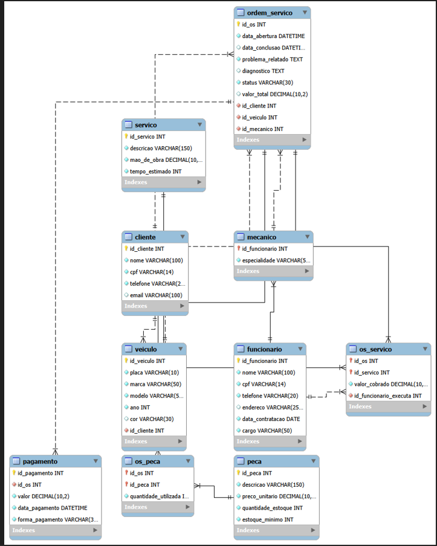
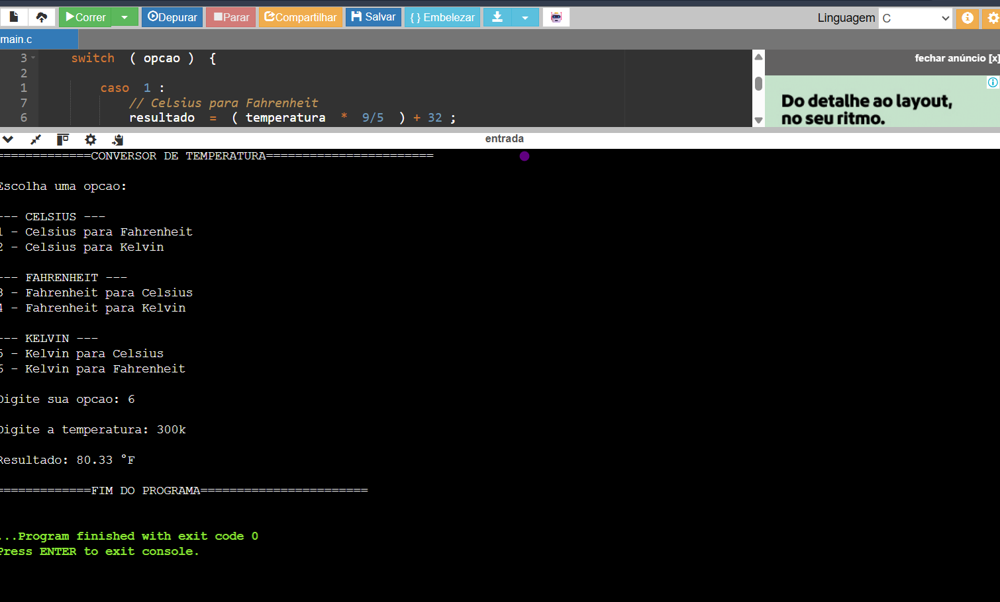
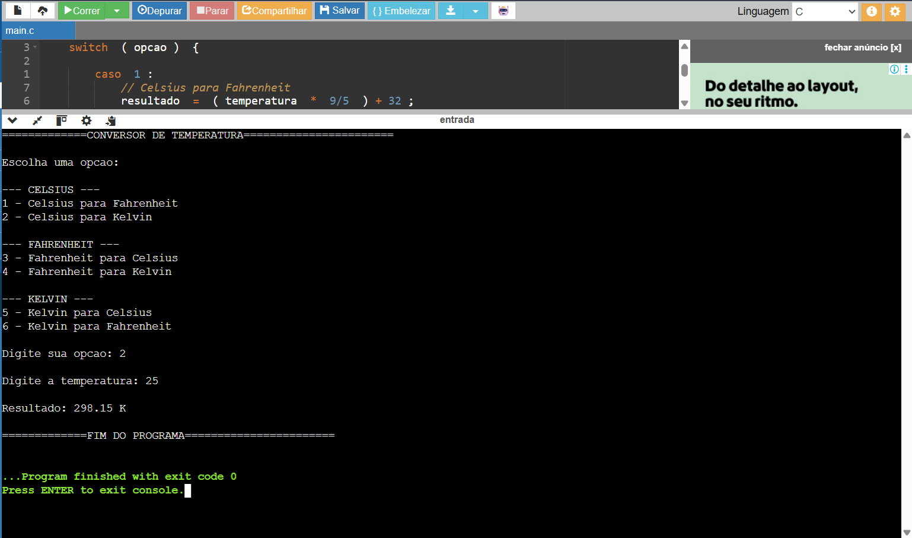
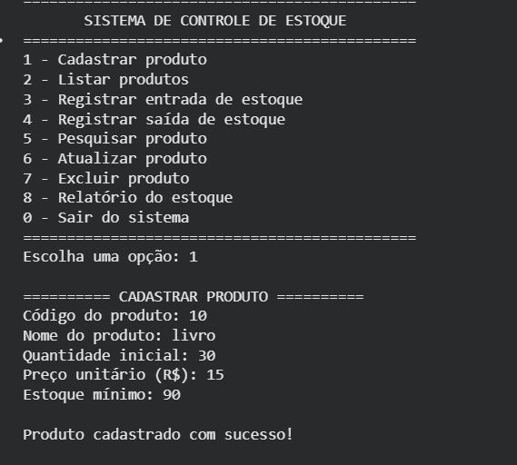
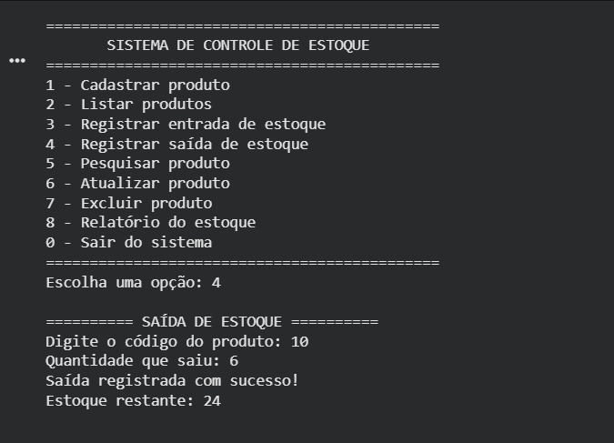

Inteligência Artificial
Tenho interesse em descobrir como a IA pode auxiliar nos estudos e nas tarefas do dia a dia.
ESTUDANTE DE TECNOLOGIA
Tenho interesse em tecnologia, programação e inovação. Estou sempre em busca de aprender novas habilidades e desenvolver meus conhecimentos.
Conheça meus projetos Meu GitHubSou estudante de Análise e Desenvolvimento de Sistemas e tenho interesse na área de programação. Estou em busca de aprender, desenvolver minhas habilidades e conhecer melhor esse mercado tão amplo e em constante crescimento. Durante minha formação acadêmica, venho explorando diferentes tecnologias e desenvolvendo conhecimentos que contribuem para minha evolução profissional.
Gosto de aprender novas habilidades e descobrir coisas novas. Alguns dos assuntos e atividades que fazem parte da minha rotina são:
Tenho interesse em descobrir como a IA pode auxiliar nos estudos e nas tarefas do dia a dia.
Gosto de conhecer novas ferramentas, desenvolver conhecimentos e aprender diferentes habilidades.
Gosto de treinar e manter uma rotina voltada ao desenvolvimento pessoal.
Gosto de conversar, conhecer pessoas e compartilhar experiências.
Tenho curiosidade em aprender sobre investimentos e educação financeira.
Tecnologias que venho estudando e praticando durante minha formação acadêmica.
Conheça alguns projetos acadêmicos e pessoais que fazem parte da minha jornada de aprendizagem.

Projeto acadêmico de modelagem de banco de dados para gerenciamento de uma oficina.
Tecnologia: MySQL
Status: Repositório em preparação.
Ver projeto no GitHub ↗

Programa desenvolvido em linguagem C para realizar conversões de temperatura.
Tecnologia: Linguagem C
Status: Projeto para publicação.
Ver projeto no GitHub ↗

Projeto em Python voltado à organização e ao gerenciamento de estoque.
Tecnologia: Python
Status: Em desenvolvimento.
Ver projeto no GitHub ↗Atualmente, curso Análise e Desenvolvimento de Sistemas e busco ampliar meus conhecimentos em programação, desenvolvimento web e banco de dados. Meu objetivo é continuar aprendendo, desenvolver projetos cada vez melhores e conquistar oportunidades profissionais na área de tecnologia.